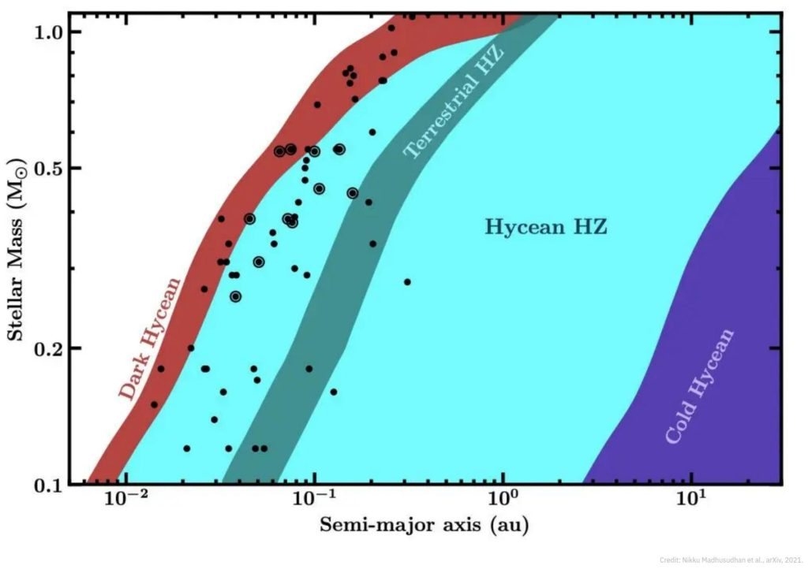

In this article we explore the idea of Hycean worlds, and formulate a series of questions regarding them. Then we raise a comm to The Domain Commander and listen to his answers. It is my hope that we can find some illumination of this most interesting of subjects.
A Hycean world is an ocean world (or mostly ocean world). It is either covered in ice (a Dark Hycean), or surrounded by an atmosphere of hydrogen (not nitrogen / oxygen like the earth). They are very common throughout the universe.
We will start with the article that triggered this entire set of questioning…
Hycean worlds: a new class of habitable exoplanet

Key Takeaways
-
- A study from Cambridge proposes a new type of exoplanet that may support life.
- These oceanic planets, called Hycean worlds, are covered by thick hydrogen-rich atmospheres.
- Hycean worlds are relatively common, sparking hope in the detection of extraterrestrial life.
When planetary scientists started looking for places outside our solar system that could possibly support life, they kept an eye out for worlds that resembled Earth in density, temperature, and atmosphere.
Unfortunately, these worlds are hard to come by.
Of the 4,000 exoplanets we have discovered so far, only 24 could rival our own in terms of habitability.
Instead of scouring the edges of the known universe for mirror images of Earth, researchers have tried to figure out the conditions for life to develop on other types of exoplanets.
In recent years, studies found some likely candidates in “ocean worlds,” planets with terrestrial-like atmospheres covered in liquid water, as well as rocky exoplanets with atmospheres consisting mostly of hydrogen.
Motivated by the knowledge that some species of microorganisms have been known to survive — and even thrive — in hydrogen-rich environments on Earth, astrophysicist Nikku Madhusudhan drummed up a team of researchers from Cambridge University to explore a whole new type of potentially habitable exoplanet, one covered with water and enveloped by a thick layer of hydrogen.
The authors call these planets “Hycean” worlds, a portmanteau of their two most telling characteristics: oceans and an abundance of hydrogen in the atmosphere.
Contrary to Earth-like planets, Hycean worlds can be found throughout the galaxy, meaning Madhusudhan’s assumptions — if correct — would not only influence how we look for life in space but change the way we think of our own place in it.
Determining a planet’s habitability
Assessing an exoplanet’s habitability is difficult for a number of reasons.
Because virtually all of them are as of yet unreachable by spacecraft, their properties have to be inferred from spectroscopic studies and mathematical models. Aside from a lack of reliable data, our search for life is further complicated by the fact that we do not know how it developed here on Earth.
To qualify as habitable, exoplanets must meet a number of requirements.
First and foremost, they have to be located inside a habitable zone: a stretch of space where the distance between exoplanets and the stars they orbit is large enough to prevent water from evaporating but short enough to keep it from freezing, allowing for liquid water and potentially a primordial soup similar to that from which our ancestors emerged.
That said, just because a planet happens to be located inside a habitable zone does not mean it can actually support life.
To ascertain if it can, we look for biomarkers — that is, compounds associated with living things, like oxygen, ozone, methane, and nitrous oxide.
Determining a planet’s habitability will only become easier as new technologies are introduced.
In his article, Madhusudhan reminds us that both the James Webb Space Telescope and the Extremely Large Telescope — which are, as of August 2021, still under construction — will have “the capability to detect potential atmospheric biosignatures with significant investment of observing time.”
Types of Hycean worlds
Characteristics of Hycean planets include [1] massive oceans, [2] unfathomably hot temperatures (440° F), and [3] atmospheric pressures up to a thousand times stronger than Earth’s.
The authors of the study, citing the laws of thermodynamics, claim that, in order for Hycean worlds to support life, average temperatures should not exceed roughly 250° F.
Because biomarkers like oxygen and ozone are tricky if not outright impossible to identify in atmospheres that are rich in hydrogen, the authors propose submitting their Hycean worlds to a new check list of life-related compounds, focusing on potential gases released by microbes during metabolic processes, such as chloromethane and dimethyl sulfide.
What makes Hycean worlds so exciting are not their properties but the many different ways in which these properties might be able to support life.
According to the authors, Hycean worlds should be “significantly larger compared to previous considerations for habitable planets.”
Similarly, their habitable zone may be “significantly wider” than those of terrestrial planets, broadening our options.
Hycean worlds seem so promising that the authors decided to create two sub-categories:
- “Cold Hycean” worlds are located at the outer edges of their habitable zones and receive such little light that they grow cool (but not too cool);
- “Dark Hycean” worlds are found slightly beyond the inner edges where the side of the planet facing away from the sun could be “habitable even if the dayside is too hot.”
Hope for life in the universe?
Most studies treat liquid water as the single most important requirement for habitability, but there are other, equally significant factors worth taking into account.
For example, a planet without geochemical cycles to regulate the chemical composition of its atmosphere — like the carbonate-silicate cycle does for our world — would quickly become inhospitable.
Then there are outside influences like sudden coronal mass ejections and powerful stellar winds, both of which represent a barrier for life on the surface of any exoplanet.
Additionally, Hycean worlds must maintain their enormous bodies of water over extended periods of time. The closer a planet is located to the inner edge of a star’s habitable zone, the harder this task becomes.
Despite these many obstacles, Madhusudhan insists that Hycean worlds are “optimal targets” for future habitability studies.
They are relatively abundant compared to Earth-like, terrestrial worlds, comprising a large portion of all known exoplanets.
On top of that, the atmospheres of Hycean worlds are comprised of lighter molecules which are easier to detect using the equipment at our disposal.
Even if we never actually find any living organisms, the optimism with which these researchers lay out the habitability models of Hycean worlds raises important questions about life in the universe.
Up until now, many thought it could only survive against impossibly small odds. Now, it seems as if those odds are about to get a little bit bigger.
…
Questioning the Domain Commander
These are the kinds of subjects that I am qualified to ask and who’s answers I am qualified to understand. Thus, this question bank allows us a great opportunity to increase our understanding of life, the universe, and our roles within it. To this end, I sat down and composed some questions for the Domain Commander to answer.
Hycean worlds consist of a broad spectrum of worlds. Is life more common on these worlds than on earth-similiar planets?
These worlds can be classified into many categories of different living environments. And some of them (containing life as you would understand it), as you have correctly surmised, are more populous than the earth biodiversity habitable zone is. The commonality of life is proportional to the planetary dimensions (modified by the star class), and local attributes and regional longevity / stability. Obviously, these factors change over time and are greatly variable. What you are asking about is a "snapshot" of what is available now for purposes of understanding, at which point we can advise that yes, the systems are far more populous, and contain a much greater biodiversity than anything that you are familiar with on the earth planetary sphere.
What kinds of life can be found on these worlds?
As always, these worlds vary in attributes in far more ways than the simplistic general classifications that your "scientists" have established. You might be surprised to discover that many of the lifeforms that you see on your earth planetary environment are also duplicated in these "so called" water-worlds. You can well guess that they range in complexity from bacterial all the way up to giant (by your standards) mammals and aquatic creatures with intelligence and tool making abilities. There are no serious limitations on the biodiversity that lies outside that of the planetary environs.
How do these worlds relate to humans / mankind?
They do not. Humans, as you refer to them, are simply inmate skin suits that were derived from human archetypes found throughout the main universe. There are no associations with these kinds of worlds within the current time frame as established by the MWI as the earth environment (associated with the prison complex) is concerned. These types of world do exist within the prison complex, and a number of them are in the same predictment as the earth sphere. They are prison environments where the life forms are trapped and living a treadmill of reincarnated events with the promise of eventual "heaven", or "evolution" to a better life-form.
Can you rank the feasibility of these kinds of worlds being the home for life?
The feasibility of life on these world are the same as on the earth physical sphere. Life forms easily and readily within the main primary universe.
As far as civilizations are concerned, how do these worlds rate as far as tool-making civilization crucibles?
The idea or concept of "tool making" is not well understood by inmate human skin-suits. All intelligent ambulatory creatures make tools and use them. Some are physical, but many are not. Thus, with that understanding, these worlds are equals in tool making abilities as what the earth prison planet environment is.